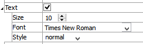
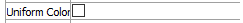
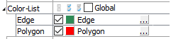
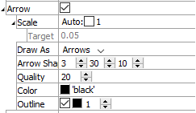

标签
说明
使用 设置历程标签（label） 命令创建的一个或多个用户自定义标签。
属性
文本

控制用于在绘图中标识该绘图项的文本外观。
文本：显示（勾选）用于在绘图中显示该绘图项的文本。
大小：设置图例中文本的大小。
字体：设置文本所用的字体面。
样式：设置文本样式（选项为常规、粗体、斜体、粗斜体）。
统一颜色

设置以执行 xxx？？？
统一颜色：设置（勾选）某项内容？？？？
颜色列表

配置用于为绘图项着色的列表。
颜色列表：设置列表中的哪些项被显示。该字段依次包含“全不选”、“全选”和“反选”按钮。其后是“全局”复选框，若勾选，则当前的颜色与标签配对将在所有绘图中全局使用。例如，如果希望为所有绘图中出现的分组名称使用某个特定且一致的颜色，此设置将很有用。
此字段也是列表中各项的容器。
[项]：当列表包含一个或多个项时，它们会列在主字段下方。项的名称用作该字段的标签。若勾选，则显示该项。接下来会出现一个颜色控件（color control）以设置/指示该项的颜色。随后显示该项的当前标签；初始时默认为项名称。设置按钮（…）可用于设置“别名（alias）”，在图例中显示时可代替项名称。
箭头

设置绘图项中箭头的显示外观。
箭头：在绘图项中显示（勾选）箭头。
比例：设置绘图中箭头的大小。若勾选“自动”，则该设置自动确定，并激活用于 目标 的附加控件。
目标：当 比例 使用“自动”设置时，设置箭头的目标大小；该值表示屏幕宽度的百分比。绘制方式：设置用于渲染该项的形状（选项为“箭头”、“线”和“圆盘”）。
箭头形状：依次指定杆的半径、头部的长度和头部的半径——以箭头长度的百分比表示。
质量：指定箭头或圆盘的“圆度”。数值越大越圆，但渲染可能需要更长时间。
颜色：指定该项的颜色。
轮廓：显示（勾选）该项的轮廓，并设置其颜色和宽度。
透明度

设置绘图项的透明度。此设置不适用于二维模型对象。
透明度：为项目应用透明度（勾选时）。开启时，透明度设为默认值 70，并处于“锁定”状态。锁定时，可用的透明度范围被限制在 70（最低，略有透明）到 100（最高，完全不可见）。要访问完整的透明度取值范围（0-100），请按下锁形图标以“解锁”透明度范围；图标会随之改变（
）。
使用帮助按钮可获取有关此特定属性的帮助。
注意
应当提醒用户：低于 70 的值往往“更不透明”得难以察觉，并且可能导致深度透视看起来奇怪或不正确。
图例
设置该项在绘图图例中的显示。所有绘图项至少都具有 标题 属性。
图例：在图例中显示（勾选）有关该绘图项的所有信息。
标题：在图例中显示（勾选）该绘图项的标题。“别名：”字段可用于为该绘图项指定自定义标题。
大小：设置图例中文本的大小。
字体：设置文本所用的字体面。
样式：设置文本样式（选项为常规、粗体、斜体、粗斜体）。
颜色：设置文本颜色。
在 标题 下方，标签绘图项还在 图例 中为 颜色列表（它为 标签 和 标题 提供子控件）、最大值、比例 和 矢量 提供控件。各子属性与 标题 的子属性相同。
| 这些内容对您有帮助吗？… | FLAC3D © 2019, Itasca | 原文更新于 2020 年 10 月 8 日 |